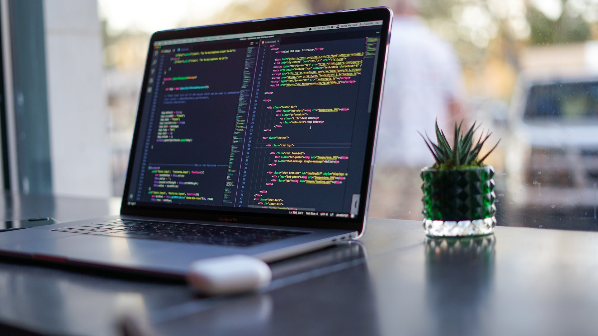
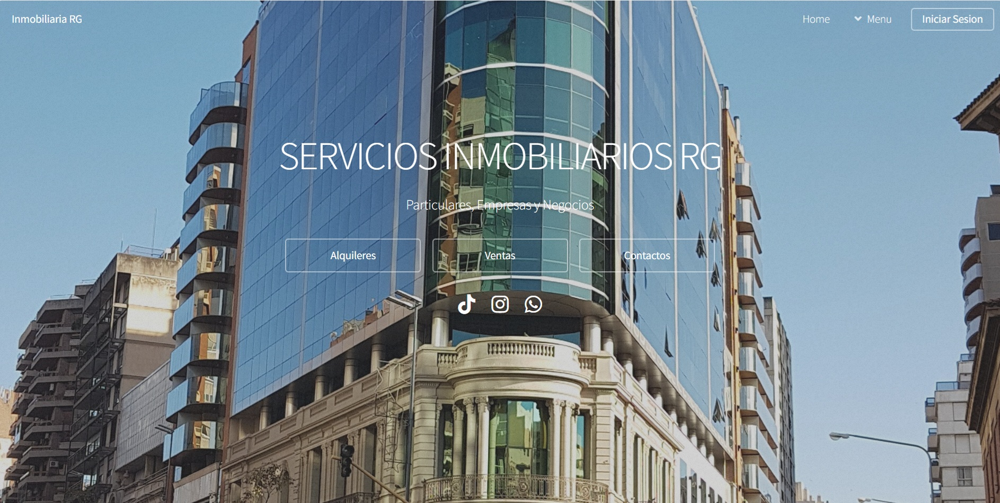
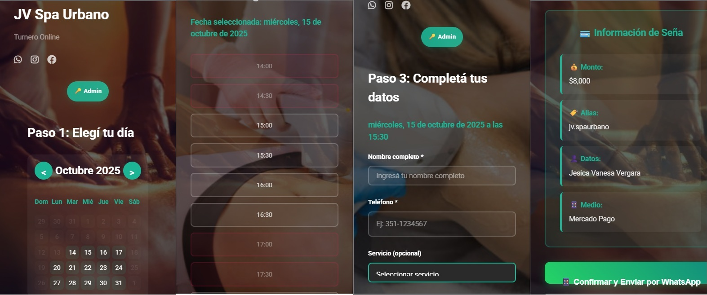

Soy profesional en Tecnologías de la Información, apasionado por sus diversas áreas. Desde temprana edad, me familiaricé con computadoras y sistemas, lo que me permitió adquirir una amplia experiencia en administración de sistemas, soporte técnico y desarrollo.
Estoy especializado en la resolución de incidencias IT y automatización de procesos, habilidades que me permiten identificar y resolver problemas técnicos de manera eficaz, brindando soporte a usuarios finales. Poseo conocimientos en redes, seguridad informática, bases de datos y herramientas de gestión IT.
Destaco por mi capacidad para trabajar en equipo y mi responsabilidad al mejorar sistemas y procesos tecnológicos en entornos corporativos. Cuento con más de 6 años de experiencia en manejo de bases de datos y soporte técnico.
Área de Transformación:Desarrollo y ejecuto proyectos especializados utilizando Python integrado con SQL para análisis de datos y automatización de procesos en web CRM con HTML y Bootstrap.
Analista Técnico Jr. en Soporte IT – Atento S.A.
Septiembre 2022 – Actualidad
Soporte Técnico Especializado:Me especializo en la atención y resolución de incidentes de primer y segundo nivel, garantizando diagnósticos precisos y soluciones efectivas. Mis responsabilidades técnicas incluyen:
Gestión integral de infraestructura:Instalación, configuración y mantenimiento de hardware y software en equipos de escritorio y portátiles.
Administración de sistemas de ticketing:Manejo avanzado de ServiceNow y SelfService para registro, priorización y resolución de incidencias.
Gestión de bases de datos empresariales:Administración de MySQL, SQL Server, Active Directory y configuraciones especializadas en Regedit.
Soporte técnico remoto:Implementación de soluciones mediante ConfigMGR, TeamViewer y AnyDesk para asistencia en múltiples ubicaciones.
Administración de redes corporativas:Diagnóstico y resolución de problemas en redes LAN/Wi-Fi, configuración de routers empresariales y soporte técnico en conexiones VPN.
Mantenimiento preventivo especializado:Programas de mantenimiento, limpieza técnica y reemplazo estratégico de componentes.
Documentación técnica profesional:Elaboración de manuales especializados, procedimientos técnicos y desarrollo de bases de conocimiento corporativas.
Colaboración interdisciplinaria:Trabajo conjunto con equipos de infraestructura y liderazgo en la implementación, testing y despliegue de nuevas tecnologías empresariales.
Formacion

ESTUDIOS
TECLAB Instituto Técnico Superior
♦ 2023 - Actualidad Técnico Superior en Programación, cursando 2° año ♦ 2023 - 2024 Auxiliar en Programación, Finalizado
Empleo los siguientes lenguajes y tecnologías:
♦ HTML ♦ GitHub ♦ JavaScript ♦ GIT ♦ CSS ♦ Postman ♦ SQL ♦ Visual Studio Code ♦ Python
Nivel de Habilidades Técnicas:
HTML/CSS
Intermedio (70%)
JavaScript
Intermedio (50%)
Python
Intermedio (70%)
SQL/Bases de Datos
Intermedio (50%)
Git/GitHub
Avanzado (85%)
Habilidades Profesionales:
Experto en Hardware de sistemas PC
Inglés: Medio-Fluido
AWS: Nivel Inicial
Prototipado UX/UI: Nivel Intermedio-Avanzado
Freelance
Desarrollo Front-end Creo interfaces web atractivas y funcionales, optimizadas para todos los dispositivos. Trabajo de forma remota entregando proyectos con altos estándares de calidad.
Proyectos destacados:
Sitio Web para Inmobiliaria. Plataforma web moderna para inmobiliaria con catálogo de propiedades interactivo, búsqueda avanzada y sistema de contacto. Proyecto en desarrollo - Próximamente disponible

Página Principal - Desktop [DEMO]
Vista principal con búsqueda de propiedades - En desarrollo
Sitio Web para Herreria. Se desarrollo una pagina completa en la cual se pueden solicitar distintos servicios de herreria, solicitar turnos online con distintos enlaces a sus respectivas redes y vias de comunicacion
CV para Usuarios Desarrollo de currículums vitae digitales profesionales con diseños modernos, interactivos y completamente responsive. Portfolio con múltiples proyectos que destacan diferentes estilos y enfoques profesionales.
CV René Armas
Curriculum vitae interactivo con diseño profesional moderno
Sitio Web para Spa Urbano. Se desarrollo una pagina completa en la cual se puede observar los tratamientos que se realizan, adquirir productos y solicitar turnos online con distintos enlaces a sus respectivas redes y vias de comunicacion
Turnero Online JV Spa: Sistema de reservas online desarrollado específicamente para el Spa JV, permitiendo a los clientes agendar turnos de manera fácil y rápida. Incluye gestión de horarios, confirmación automática y panel administrativo.

Sistema de Turnos Online - Desktop
Plataforma completa para gestión de reservas y citas